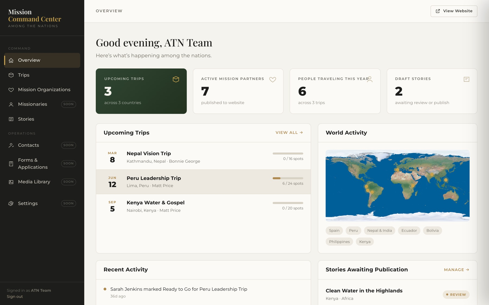
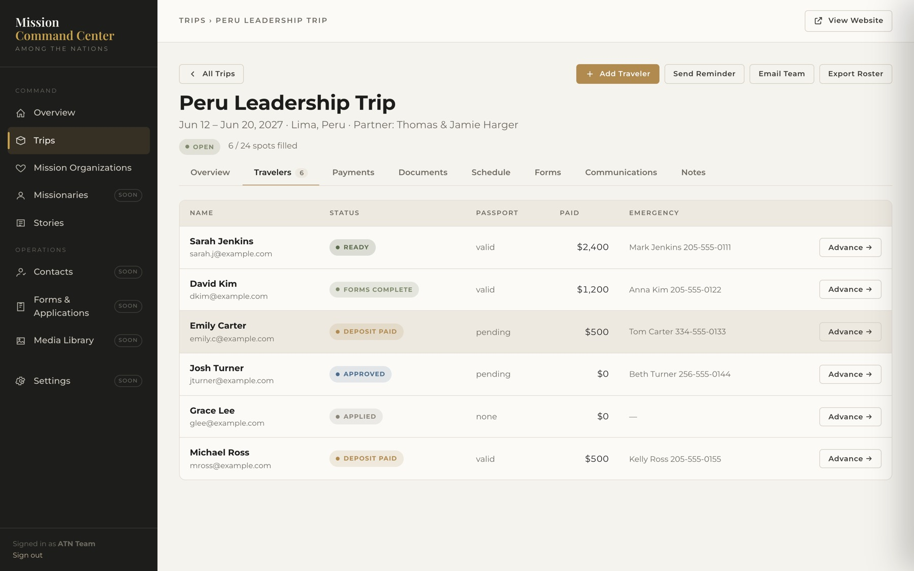
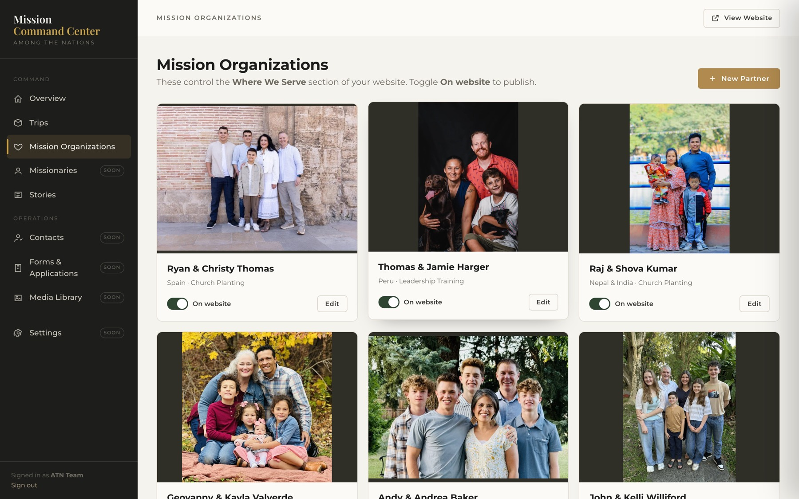
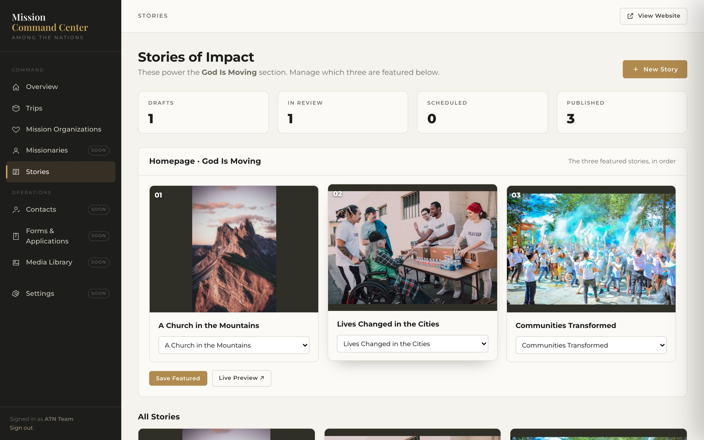

The website is the part the world sees. This is the part your team would live in — one place for trips, partners, travelers and stories, where editing a record updates the public site instantly. Below is what's already built and working, and where it can go from here.
Everything below is working right now — not a mockup. The website is pulling your real vision statement, your seven global partners and their photos, and your team roster.
Homepage, interactive globe with your partners as clickable pins, Faces of the Field, stories, giving section and the Our Team page — all on your language and your branding guide.
A private, passphrase-protected dashboard for your team. Overview, Trips, Mission Organizations and Stories are fully functional today.
Publishing a partner in the Command Center puts them on the website's Where We Serve section. Featuring a story puts it in God Is Moving. No developer needed, no code touched.
The page your team has been sending changes through is still open, and every request lands on an admin board on my end.
The giving platform decision, accurate impact numbers for the stats section, and pointing the domain when you're ready to go live.
Four screens from the live dashboard. The partners and team members are yours; the trips, travelers and story drafts are sample records I seeded so the system had something to show.
Upcoming trips, active partners, how many people are traveling this year, and which stories are waiting on you — plus a world map of everywhere ATN is working and a running activity feed of what your team has changed.

This is the piece that behaves like a CRM. Each traveler moves through a pipeline — Applied, Approved, Deposit Paid, Forms Complete, Ready, Completed — with passport status, amount paid and an emergency contact on the row. One click advances someone to the next stage, and you can export the whole roster.

All seven global partners with their real photos and ministry information. The On website toggle is the whole content management system for the Where We Serve section — flip it on and they appear on the globe and in the partner list. Add a new partner and the globe grows with the ministry.

Stories move from draft to review to published. The three you choose here are the three that show up in the God Is Moving section of the homepage, in the order you set — and there's a live preview so you can see exactly how a story will look before anyone else does.

The foundation underneath the Command Center is a real database, not a website plugin — so the same system that manages trips can hold everything else ATN needs to keep track of. These are the directions it can grow, in whatever order is actually useful to you.
One record per person — donors, travelers, pastors, church contacts, volunteers — with their full history attached. Every trip they've taken, every gift, every email, on one page.
Donation history, recurring givers, designated funds, and year-end statements — the part of the Squarespace plan you're paying for, rebuilt to fit how ATN actually raises support.
Each missionary's support goal against what's actually come in, who their supporting churches are, and when their last update went out.
Trip applications, references, medical and liability forms filled out online and filed straight onto the traveler's record — instead of chasing PDFs over email.
A record for every sending church — who you talk to there, what they're giving toward, which trips they've sent teams on, and when someone last reached out.
Send a trip team a reminder, a partner list a prayer update, or a donor group a year-end letter — from the same place the records live, with a log of what went out.
Requests from the field, updated by partners, published to the website when appropriate — so what people are praying for stays current instead of going stale.
Photos and video from the field in one searchable place, tagged by partner, nation and trip, ready to drop into a story or a newsletter.
The numbers you need for a board meeting or an annual report — people sent, nations reached, funds raised — pulled from live records and exported to a spreadsheet.
Individual logins instead of one shared passphrase, so a trip leader sees their trip, a partner updates their own bio, and the office sees everything.
None of the ten above are built yet — they're what the foundation is capable of, not promises with dates on them. Missionaries, Contacts, Forms, Media Library and Settings already appear in the sidebar marked Soon so you can see where they'd live.
My suggestion is that we don't try to build all of it. Pick the one or two that would save your team the most hours right now, and we add those next. The rest can wait until ATN actually needs them.
You mentioned the Squarespace Core Plan renews at $276 a year, and that it covers more than the domain — website building, payments and donor records. Here's how that lines up.
| What you need | Squarespace Core | This build |
|---|---|---|
| Website + hosting | Included | Included — donated |
| Interactive globe with partner bios | Not possible | Live now |
| Editing site content yourself | Squarespace editor | Command Center |
| Mission trip & traveler management | Not offered | Live now |
| Payments & donor records | Included | Possible — not built yet |
| Domain ownership | Included | Stays yours, wherever it's registered |
| Ongoing cost | $276 / year | Roughly $30–50 / month in services |
Don't drop the Squarespace plan until we've settled where giving lives and the new site is actually pointed at your domain. If donor records are sitting in Squarespace today, we'd want to get those exported first — and that's a good reason to decide the giving platform question sooner rather than later.
Nothing here needs a decision today. But these are the four things standing between the current preview and a live website.